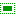
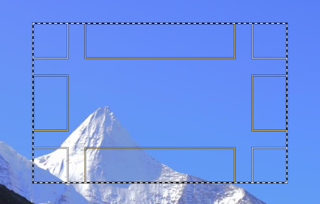

矩形选择工具 Rectangle Select Tool
快捷键：R
矩形选择工具及其工具选项有
矩形选择工具(  )可以在图像中画一个矩形的选择区域，它是GIMP最基本和最常用的选择工具。
{kind=link}
我们选中 矩形选择工具 后，在图像上点击并拖动鼠标就可以创建的一个矩形选区(大小合适后就松开鼠标)：
 创建好的矩形选区(蚂蚁线)
上面的截图中：
黑白虚线(也叫蚂蚁线)框是选区边框，这就是创建的矩形选区；
矩形选区的四个角和四个边的内侧，都各有一个实线矩形框，这八个实线矩形框是用来调整矩形尺寸的控制手柄，可以修改矩形选区四个边的位置；
默认情况下，矩形选区只会显示四个角的控制手柄，不显示四个边的控制手柄；
四个边的控制手柄，只有在鼠标位置移动到相应的的矩形实线框范围内时才会显示出来，且同一时间只能显示一个；
四个角处的控制手柄，每一个都可以同时调整矩形选区的两个边；
四个边的控制手柄，每一个只能调整矩形选区的一个边；
通常情况下，创建矩形选区分两个步骤：
创建矩形选区；
调整矩形选区；
如果您只是随意画一个矩形选区来测试一下，那么，第二个步骤完全不需要；
如果您需要精确控制矩形选区的尺寸，或者控制选区边框的位置，那么，通常两个步骤都需要；(如果您了解工具选项，那么可能只需要第一个步骤)
要精确调整已经创建的矩形选区，您可以把图像放大(可以放大到像素级)，这样就可以进行细微操作，精确调整矩形选区；
创建好的矩形选区，在没有进行其它操作前，随时都可以进行精确调整，不受限制；
提示
保存选区提示：
一个已经做了精确调整的选区，如果以后还想使用，可以把这个选区保存起来，以后可以直接调出来重复使用。
保存方法：菜单 选择→保存到通道。调用方法：菜单 窗口→可停靠对话框→通道，选中相应的通道，点击鼠标右键→通道到选区。
辅助快捷键
创建矩形选区时，可以使用 Ctrl、Shift、Alt 这三个快捷键来辅助操作，来实现一些功能：
创建矩形选区的过程中(已经画了一部分，但未画完)按下Ctrl键，可以让矩形以鼠标点击的位置为中心向外扩展；
创建矩形选区的过程中(已经画了一部分，但未画完)按下Ctrl+Shift键，可以让矩形以鼠标点击的位置为中心向外扩展，且保持为正方形；(需要工具选项中设置固定宽高比 1:1)
创建矩形选区的过程中(已经画了一部分，但未画完)按下Shift键，可以让矩形保持为正方形；(需要工具选项中设置固定宽高比 1:1)
创建矩形选区之前如果按住Ctrl键，表示要从已经存在的选区中减去要创建的矩形选区；此操作需要已经有选区存在，如果没有选区存在，按Ctrl键画矩形选区时会报错；
创建矩形选区之前如果按住Shift键，表示要从已经存在的选区中加上要创建的矩形选区；此操作不需要已经有选区存在；
创建好矩形选区后，按下Alt键并点击矩形选区内部，可以移动矩形选区；
工具选项
这里提供了更多的细节控制。
(没找到工具选项？请参考工具箱→矩形选择工具→如何显示工具选项)
模式：模式会决定新创建的选区与已经存在的选区如何组合，有四个选项：
替换：已经存在的选区会被删除，只保留新创建的选区。
合并：新创建的选区和已经存在的选区相加，相当于并集。
减去：从已经存在的选区减去新创建的选区，相当于差集。
相交：保留新创建的选区和已经存在的选区的重合部分，未重合部分全部删除，相当于交集。
抗锯齿：使选区的边缘更平滑(通常对弧线或斜线有效)。
羽化边缘：可以融合边缘，使选区与背景过度更平滑。默认半径为10像素。
圆角：创建圆角矩形。滑块可以调整圆角半径。
从中心扩展：勾选后，鼠标点击的位置会成为选区的中心点，选区从中心向外扩散。
固定：几种限制矩形形状的方法：
宽高比：让矩形的宽高比保持固定比例，比例值在下面的数值框内，默认是1:1(正方形)。数值框右侧有两个小图标，可以反转比例。
宽度：固定矩形的宽度，宽度值在下面的数值框内，默认是0。
高度：固定矩形的高度，高度值在下面的数值框内，默认是0。
大小：固定矩形的尺寸，数值在下面的数值框内，默认值是100x100。
位置：矩形左上角的横坐标和纵坐标，修改这两个值可以精确地调整矩形的位置。默认单位是像素，可以改为其它单位。
大小：矩形的宽度值和高度值，修改这两个值可以精确地调整矩形的尺寸。默认单位是像素，可以改为其它单位。
高亮：勾选后，矩形区域外会变暗(类似蒙版)，视觉效果上更方便。不透明度滑块可以调整矩形区域外变暗的程度。
参考线：在选区中显示的参考线类型，即创建选区的同时在选区内显示参考线。
无参考线：不使用参考线。
中间线：一条垂直中心线和一条水平中心线，相互交叉。
三分构图法：添加两条等距水平线和两条等距垂直线，将变换区域横向和纵向都三等分，整个图像九等分。
五分构图法：与 三分构图法 类似，但横向和纵向都五等分，整个图像25等分。
黄金分割：数学上又称黄金比例(0.618)，面积分成九份，各份与被变换的面积成黄金比例。
对角线：用45度对角线划分变换区域。
自动收缩：点击此按钮，选区会自动收缩到最接近选区内元素尺寸的矩形形状。此算法有一点点笨AI。
收缩合并：勾选此项后，上面的 自动收缩 按钮不再只计算当前活动图层，改为计算所有可见图层。(类似于位样合并)
工具选项窗口底部有四个按钮，一些常用的参数可以保存起来供以后使用：
保存工具预设：把当前的参数保存起来，以后可以直接调用；可以保存多个；保存时可以命名。
恢复工具预设：调用以前保存的参数。
删除工具预设：删除以前保存的参数。
重置到默认值：把当前参数重置到GIMP默认值。